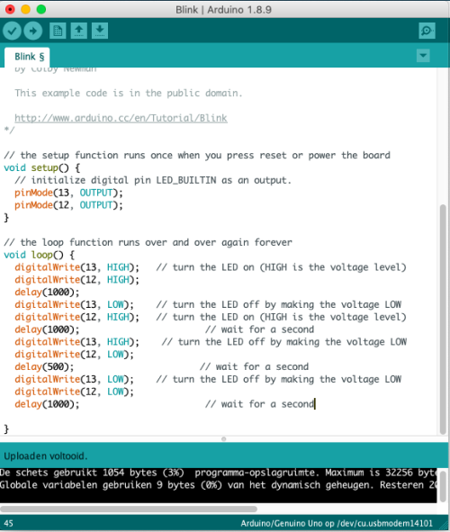

Opdracht 3C
Bij deze opdracht heb ik twee LED lampjes aangesloten en uitgebreid om meer mogelijkheden te testen. De eerste (groene) LED is aangesloten op 13 en de tweede (gele) LED op 12. Eerst moesten de lampjes tegelijk knipperen. Volgens moesten ze elkaar afwisselen. Uiteindelijk was het bij 3C de bedoeling dat het groene lampje twee keer zo snel zou knipperen als het gele lampje. Hiervoor heb ik in de code meerdere keren verwezen naar de 13 en 12 en gebruik gemaakt van HIGH en LOW in de loop.
Opdracht 4C
Bij deze opdracht heb ik gekeken naar hoe je de helderheid van de LED lampjes kan controleren, door middel van de analogWrite() functie, waarbij 0 helemaal uit is en 255 volledig aan. Hiervoor worden er ook eigen namen aan de ledjes gegeven: greenLedPin en yellowLedPin. Eerst moest ik een code in mijn Arduino uploaden. Toen moest ik de code zo veranderen dat een van de lampjes langzaam van 0 (uit) naar 255 (volledig aan) zou vervagen. Hiervoor moest ik aanpassingen van in de loop. Uiteindelijk was het bij 4C de bedoeling dat het ene lampje langzaam aan gaat en het andere lampje tegelijkertijd langzaam uitgaat. Ik heb hiervoor in mijn code gebruik gemaakt van - en ++ in de analogWrite).
Opdracht 6C
Bij deze opdracht komt de potentiometer erbij. Ik heb de code "sensorValue = (sensorValue/1023)*255;" gebruikt zodat de sensorwaarde nu van een bereik van 0-1023 naar 0-255 werd geschaald. Ook heb ik de type variabele van sensorvalue van int naar float veranderd. Verder kwam de "map() functie" nog bij deze opdracht kijken. Uiteindelijk was het de bedoeling dat het ene lampje aangaat terwijl de andere uitgaat en andersom, door aan de potentiometer te draaien.
Opdracht 7
Bij deze opdracht heb ik de LED lampjes met een andere sensor beheert, namelijk met de LDR, die reageert op de gevoeligheid van de hoeveelheid licht dat wordt gemeten. Eerst moest ik het hoogste en het laagste getal dat er in de serial monitor op mijn scherm werd gegeven opschrijven. Toen kon ik de sensorValue veranderen naar een omvang van weer 0-255. Daarnaast heb ik nog de "constrain() functie" gebruikt om ervoor te zorgen dat het getal nooit lager dan 0 komt. Uiteindelijk gingen de lampjes dus aan als er licht op de sensor viel, maar als ik me hand erop hield zodat er geen licht binnenkwam gingen de LED lampjes uit!
Opdracht 8
Bij opdracht 8 gingen we meer leren over de voltage divider; een circuit dat van een grotere naar een kleinere spanning draait. Het maakt gebruik van twee weerstanden (resistors) R1 en R2, een ingangsspanning (input voltage) Vin en een itgangsspanning (output voltage) Vout. Hierbij behoren ook formules. Uiteindelijk moest ik bedenken hoe dit bij het voorbeeld zou werken en welke getallen eruit zouden komen en dit daarna testen. Op de video is het circuit te zien hoe het uiteindelijk werkte.
R1 donker, R2 licht = 0
R2 donker, R1 licht = 220
Allebei licht = 229
Allebei donker = 190
Opdracht 9B
Voor deze opdracht moest ik het Arduino-bord als invoerapparaat voor onze computer gebruiken door een verbinding tot stand te brengen tussen Arduino en Processing. Ik moest dus ook het programma Processing downloaden om hier ook gebruik van te kunnen maken. Er waren codes gegeven die ik in mijn arduino en processing kon invoeren. Eerst kreeg ik een cirkel te zien als ik bij processing hem afspeelde. Uiteindelijk moest ik de processing code zo aanpassen dat ik de sensor value in een interessante manier gebruikte. Hiervoor heb ik eerst een vierkant van het de cirkel gemaakt, door "rect" te gebruiken. Vervolgens ben ik zo met de getallen gaan spelen dat het figuur draait en over het scherm heen beweegt naar hoeveel licht de sensor opvangt. Op het filmpje zie je dus dat ik mijn hand beweeg over mijn arduino-bord, hiermee beïnvloed ik hoeveel licht er naar binnen valt. Tegelijkertijd zie je op het scherm het vierkant bewegen.
Opdracht 10F